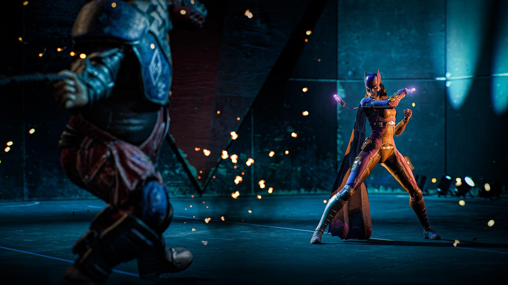
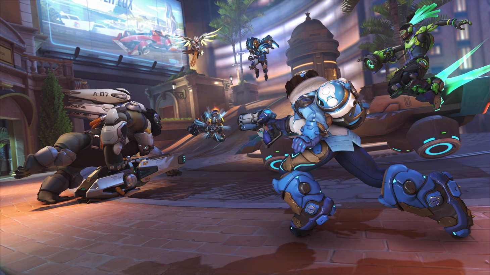
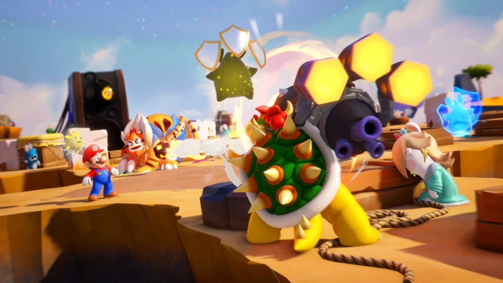

Batman may be dead, but his mission carries on as Nightwing, Batgirl, Robin, and Red Hood take up the calling to protect Gotham. Pulling the most well-known and popular character of the mythology from the mix comes with some notable downsides, as much of the pathos and psychological drama goes with him. However, the young generation of heroes manages to put on a relatively good show even without their mentor along for the ride, albeit one that feels like it’s not quite in the same league as the Dark Knight’s greatest adventures.
Gotham Knights is not part of the celebrated Arkham series, but enough similarities exist that you’d be excused for thinking otherwise. Players take their chosen hero on nightly patrols across a large but not especially lively Gotham, halting crimes, helping allies, and hunting down clues. The freedom of exploration across a vast cityscape is inviting, but the space feels empty and lacking in memorable locales.
There’s plenty to do on your patrols, from gathering lost Batarangs to completing races on your Batcycle. But as the hours wore on, I increasingly felt like the gradual leveling and mission structure were heavy on busy work and light on original and exciting moments or reveals.

Overwatch took the gaming world by storm when it launched in 2016, thanks to its well-balanced roster of unique heroes and terrific objective-based, first-person-shooting gameplay. The game’s popularity endured through the years thanks to a wealth of new content like characters, maps, cosmetics, and game modes, adding to the terrific foundation. However, once the content dried up for Overwatch, the public interest followed shortly afterward. Overwatch 2 represents the re-emergence of one of the top multiplayer games of the last generation, delivering a 5v5 format, a free-to-play structure, and a ton of new content. The result is an action-packed and enjoyable progression of the beloved hero-shooter franchise, but one that feels less revolutionary and more iterative than expected.
The core gameplay feels simultaneously familiar and fresh. Capturing an objective with a coordinated assault or activating your Ultimate during a crucial last-second push to secure the victory is just as breathtakingly exciting as ever. The ways the heroes interact with each other – both in gameplay and personality – create watercooler moments I imagine I’ll bring up with my fellow players for years to come. The mechanics and match flow remain mostly intact, but developer Blizzard implemented various changes to the core formula to deliver something that changes how battles play out.
The new 5v5 format is perhaps the most significant change in Overwatch. Now, traditional team comps drop to one tank, making its role as a damage sponge and utility player more critical than ever. With Doomfist now a tank and Orisa reworked to be more offense-minded, you now have a broader range to choose from in the category. Outside of tank play, this 5v5 format opens the door for faster-paced blitzes and ensures that every player carries more importance in each match. This shift is particularly evident in Push, the new game mode where players escort a robot to the other team’s spawn point. This mode is fast-paced and can swing the other way quickly, playing perfectly into the new 5v5 format.

2017's Mario + Rabbids Kingdom Battle proved naysayers wrong by offering a well-crafted tactics game that successfully blends two very disparate franchises. Its sequel, Sparks of Hope, now must live up to fan excitement rather than dispel their doubt. Ubisoft Milan accomplishes this feat by returning to the drawing board, reworking its template, and creating a more streamlined, dynamic experience that maintains strategic depth. The core combat remains strong, but Ubisoft fleshed out the rest of the offerings to create a more wholly engaging package.
An optimal turn using a single hero often looks like this: I sprint toward a foe and slide into them for damage. I then retreat to a nearby ally to perform a team jump launching me airborne. I hover to a higher vantage point, activate a hero action such as Peach’s damage-negating shield, and move again. After finding new cover, I use my primary attack to blast another enemy before I’m finally forced to end my turn. I love how the looser framework allows me to squeeze more actions from a turn, and combat feels more exciting as a result. Chaining moves, such as launching targets into the range of, say, Mario’s automatic counterattack, adds to this satisfaction.
Since each hero can carry two Sparks, they feel more versatile as individuals resulting in more well-rounded teams. I love that I can have Rabbid Luigi handle foes weakened by shock and frost attacks on his own. I appreciate how enemy vulnerabilities forced me to constantly switch Sparks and prevent me from sticking with the same loadout or team out of complacency.